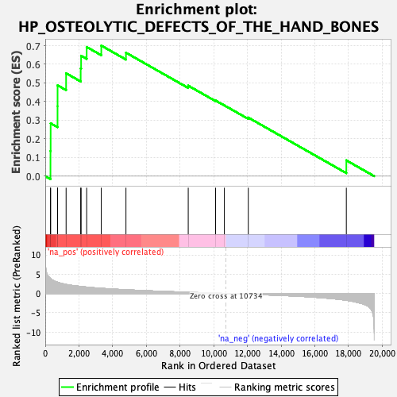

| | | Dataset | PFS |
| Phenotype | NoPhenotypeAvailable |
| Upregulated in class | na_pos |
| GeneSet | HP_OSTEOLYTIC_DEFECTS_OF_THE_HAND_BONES |
| Enrichment Score (ES) | 0.70041245 |
| Normalized Enrichment Score (NES) | 1.7995193 |
| Nominal p-value | 0.0017574693 |
| FDR q-value | 1.0 |
| FWER p-Value | 0.997 |
Table: GSEA Results Summary

Fig 1: Enrichment plot: HP_OSTEOLYTIC_DEFECTS_OF_THE_HAND_BONES
Profile of the Running ES Score & Positions of GeneSet Members on the Rank Ordered List
| SYMBOL | RANK IN GENE LIST | RANK METRIC SCORE | RUNNING ES | CORE ENRICHMENT | | 1 | IFIH1 | 310 | 3.908 | 0.1351 | Yes |
| 2 | NOTCH2 | 320 | 3.856 | 0.2836 | Yes |
| 3 | ATL3 | 729 | 2.909 | 0.3751 | Yes |
| 4 | HPGD | 731 | 2.908 | 0.4874 | Yes |
| 5 | FLNA | 1237 | 2.343 | 0.5521 | Yes |
| 6 | COL3A1 | 2103 | 1.809 | 0.5776 | Yes |
| 7 | CTSK | 2128 | 1.800 | 0.6459 | Yes |
| 8 | SCN9A | 2458 | 1.656 | 0.6930 | Yes |
| 9 | CTSC | 3326 | 1.341 | 0.7004 | Yes |
| 10 | KIF1A | 4790 | 0.957 | 0.6624 | No |
| 11 | PDGFRB | 8486 | 0.324 | 0.4855 | No |
| 12 | LMNA | 10110 | 0.089 | 0.4058 | No |
| 13 | BANF1 | 10632 | 0.014 | 0.3796 | No |
| 14 | WNK1 | 12051 | -0.191 | 0.3143 | No |
| 15 | ZMPSTE24 | 17870 | -1.777 | 0.0848 | No |
Table: GSEA details [plain text format]
Fig 2: HP_OSTEOLYTIC_DEFECTS_OF_THE_HAND_BONES: Random ES distribution
Gene set null distribution of ES for HP_OSTEOLYTIC_DEFECTS_OF_THE_HAND_BONES